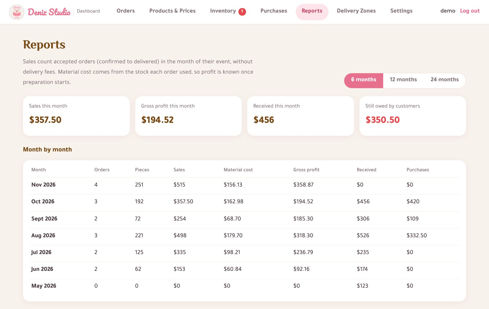
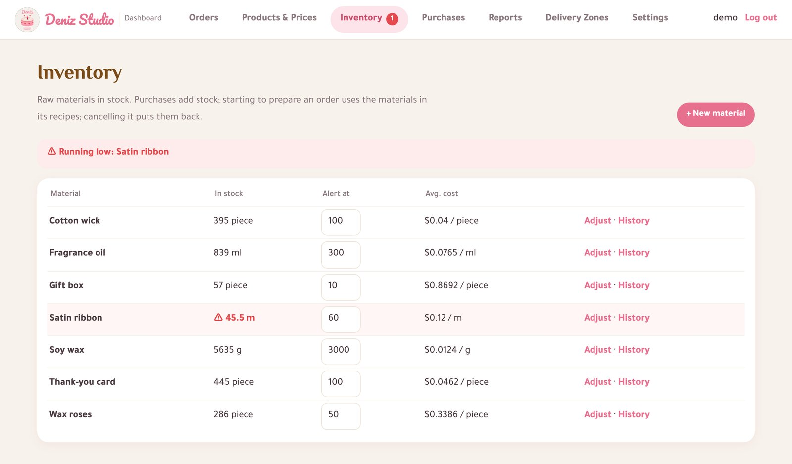
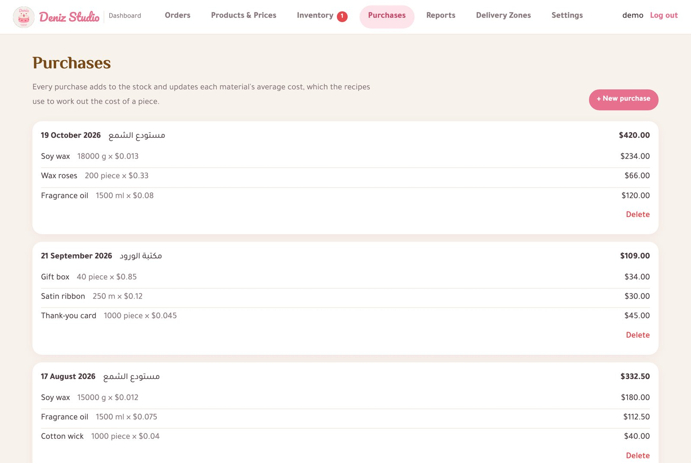
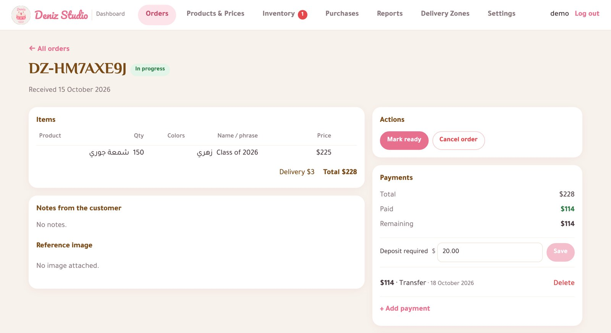
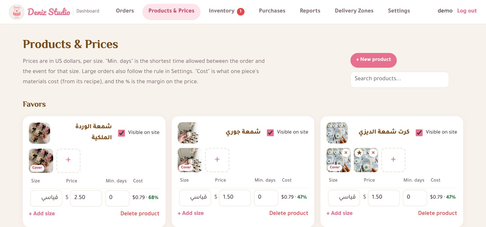

Sumaia Ahmad
Software Engineering Graduate · Damascus, Syria
My hands-on experience comes from building an order, purchasing, inventory and reporting system for my own small business, from the first requirement to daily use.
Main project
Deniz Studio management system
Deniz Studio is my handmade candle business. Orders, payments and stock were tracked in Instagram messages. I analysed the workflow, wrote the requirements and business rules, and built the system that now runs it.
Sales & payments
Order review and approval, deposits, order statuses, partial payments and remaining balances.
Purchasing & inventory
Purchases raise stock and update the weighted average cost; every change is recorded as a stock movement; low-stock alerts.
Costing
A bill of materials per product gives the cost of one piece and its margin.
Reporting
Monthly sales, material cost, gross profit, cash received, purchases and receivables, built with SQL.





Screenshots use sample data.
Business rules
- Each order line keeps the price at the time of sale.
- Material cost is stored when used, so past profit never changes.
- Missing payments show a warning instead of blocking the owner.
- An assistant role manages orders without seeing costs or reports.
Monthly sales report (SQL)
SELECT strftime('%Y-%m', o.event_date) AS month,
COUNT(DISTINCT o.id) AS orders,
SUM(i.unit_price * i.quantity) AS sales
FROM orders o
JOIN order_items i ON i.order_id = o.id
WHERE o.status IN ('confirmed', 'in_progress',
'ready', 'delivered')
GROUP BY month
ORDER BY month DESC;Built with Python, Flask, SQL (SQLite / PostgreSQL) and React; automated tests and Docker setup. Source code on GitHub →
Skills
Business processes
Sales & orders, payments & receivables, purchasing, inventory, costing, reporting
Databases & SQL
SQL (joins, aggregates), database design, PostgreSQL, MySQL, SQLite, migrations
Development
Python, Flask, REST APIs, Pandas, Git & GitHub
Communication
Teaching and mentoring, problem solving, teamwork · Arabic (native), English (intermediate)
Education & experience
- B.Sc. Software EngineeringSyrian Private University, Damascus
- Computer Science TeacherMaali Al-Majd Private School, Damascus
- Marketing Assistant
- Community VolunteerAmmrha Foundation, Damascus
Full details are in the CV.
Other project
Supermarket Management API · Flask and MySQL system for products and sales invoices, with tax calculation, automatic stock reduction and sales blocked when stock is insufficient. Code →